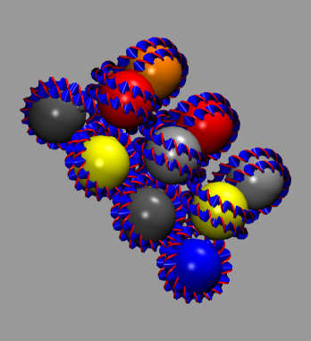
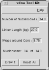

This plugin reconstructs a 3D model of chromatin using ideal DNA
interbasepair helical parameters (in proper r.h.s. ref. frame ordering)


The 3D curve is calculated using
the DNA interbasepair helical parameters
(in proper r.h.s. ref. frame ordering)
- Gamma = (shift,slide,rise)
- Omega = (roll,tilt,twist)
- Default is 14 nucleosomes 146bp each.
- and a 27bp length of straight linker
This plugin is useful for investigating the folding of chromatin based on the
"two-angle" model where the total linker length and twist between nucleosomes
determines the overall geometry of chromatin. It is a homogenous model of
chromatin. An inhomogenous model can be obtained from
http://dna.ccs.tulane.edu/vdna/.
Author: Tom Bishop
bishop@latech.edu
318-257-5209
http://www.latech.edu/~bishop